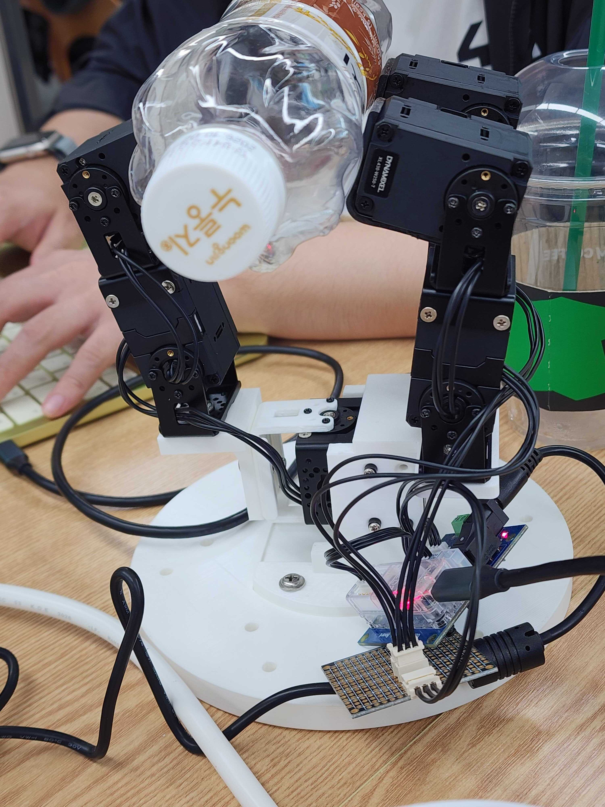
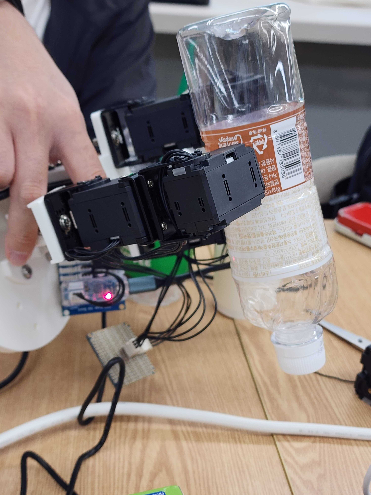
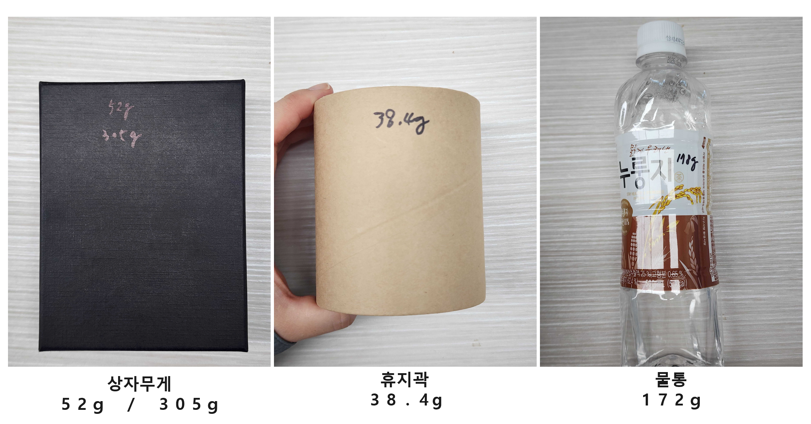

3지 다관절 로봇손의 안정적 물체 파지:
기구 설계 및 형상별 파지 검증
¶
tri_hand: 일상 물체(휴지심 38g·물통 172g·상자 52g~305g) 파지를 위한 MuJoCo 가상 검증과 두꺼운 실리콘 면 접촉 설계
Abstract & Key Contributions¶
로봇 손의 가장 본질적인 목적은 다양한 일상 물체를 떨어뜨리지 않고 안정적으로 쥐는 것(Grasping)입니다.
본 프로젝트 tri_hand는 3개 손가락과 7개의 독립 관절(7자유도)을 가진 로봇 손을 컴퓨터 가상 환경(MuJoCo)에서 먼저 검증하고, 실제 로봇(Dynamixel XL430-W250-T 7축)에 안전하게 적용하는 가상-실물 연계(Sim-to-Real)를 시도했습니다.
실제 개발에서는 복잡한 이론 역학 유도나 실물 하드웨어에서의 과도한 통제 조건 대신, 가상 시뮬레이션을 통한 사전 기구 검증과 하드웨어 접촉면의 실용적 개선에 집중했습니다. 이를 통해 로봇의 충돌 및 파손 리스크를 사전에 차단하면서도, 일상 물체를 안정적으로 다룰 수 있는 제어 시스템을 구축했습니다.
🌟 핵심 설계 및 검증 성과¶
- MuJoCo 시뮬레이션 선행 검증 (Sim-to-Real): 실물 로봇을 직접 조작하기 전에 가상 환경에서 손가락 관절의 안전 가동 범위와 충돌 여부를 먼저 시각적으로 확인하고, 동일한 REST API 규격으로 실물 로봇에 안전하게 연결했습니다.
- 두꺼운 실리콘 테이프 기반 면 접촉 구현: 미끄러지기 쉬운 3D 프린팅 손가락 끝 대신 모터(액추에이터) 외곽에 두꺼운 실리콘 테이프를 둘러 마찰력을 대폭 높이고, 모든 대상 물체에 안정적인 면 접촉을 형성했습니다.
- 회전 동작을 포함한 실용적 파지 검증: 엄격한 정적 통제 대신 일상 물체 3종(휴지심 약 38g, 물통 약 172g, 상자 약 52g~305g)을 파지한 뒤, 로봇 손을 공중으로 들어 올려 3차원으로 회전하고 움직여도 떨어지지 않는 것을 실물 검증 기준으로 삼았습니다. (특히 파지에 유리한 높이 2cm 상자는 약 52g부터 약 305g까지 하중을 추가해 한계 안정성을 확인했습니다.)

▲ 평면 물체 접촉 및 안정적 파지 (flat)

▲ 3차원 회전 시 무낙하 유지 검증 (rotation)
Key Benchmark Highlights¶
Sim-to-Real System Architecture¶
시뮬레이션(src/server.py)과 실물 로봇(real/server.py)이 공용 REST API와 웹 대시보드를 공유합니다.
가상 환경에서 먼저 검증한 안전 가동 범위와 파지 프리셋을 실물 로봇에 그대로 안전하게 전송합니다.
%%{init: {'flowchart': {'curve': 'linear'}}}%%
flowchart TD
subgraph Clients ["프레젠테이션 계층 (Presentation)"]
UI["웹 대시보드 (src/dashboard.html)<br/>실시간 관절 모니터링 · 토크 제어 · 파지 프리셋"]
end
subgraph Simulation_Side ["가상 환경 (Sim-First 검증)"]
ServerSim["가상 시뮬레이션 서버<br/>(src/server.py)"]
MuJoCo["MuJoCo 물리 엔진<br/>(hand.xml / scene.xml)"]
ServerSim --> MuJoCo
end
subgraph Hardware_Side ["실물 환경 (Real Hand 배포)"]
ServerReal["실물 로봇 제어 서버<br/>(real/server.py)"]
DXL["U2D2 + Dynamixel SDK<br/>(7x XL430-W250-T)"]
ServerReal --> DXL
end
UI <--> ServerSim
UI <--> ServerRealGrasping Control Pipeline¶
물체 형태별 파지 준비 자세부터 목표 파지 및 회전 유지까지의 파이프라인입니다.
flowchart LR
A[물체 선택<br>휴지심 38g / 물통 172g / 상자 52~305g] --> B(파지 프리셋 자세 적용)
B --> C[손가락 접근 및 사전 정렬]
C --> D[실리콘 면 접촉 및 손가락 파지]
D --> E{적정 그립 유지?}
E -->|Yes| F[리프팅 및 회전 안정성 검증]
E -->|No| D3대 대상 물체별 파지 특성 및 실물 검증¶
모든 물체는 액추에이터 주변에 감은 두꺼운 실리콘 테이프를 통해 넓은 면 접촉을 형성하며, 파지 성공 판정은 **"로봇 손을 들어 올려 3차원으로 회전하고 움직여도 물체가 떨어지지 않는가"**를 기준으로 검증했습니다.

▲ 파지 실험에 사용된 대상 물체 3종 (휴지심 38g, 물통 172g, 상자 52~305g)
1. 휴지심 (약 38g) — 가벼운 중공 원통형 물체¶
- 접촉 특성: 약 38g의 매우 가볍고 속이 빈 원통 구조. 두꺼운 실리콘 테이프가 종이 곡면에 밀착하여 넓은 면 접촉 형성.
- 핵심 포인트: 과도한 힘으로 찌그러뜨리지 않으면서도 미끄러짐을 막을 수 있는 적정 닫힘 각도 설정.
- 검증 결과: 실리콘 마찰력으로 형태 변형 없이 안정적으로 파지 상태를 유지하며, 손을 들어 회전해도 떨어지지 않음.
2. 물통 (약 172g) — 무게감이 있는 원통형 물체¶
- 접촉 특성: 약 172g의 매끄러운 플라스틱 원통 표면을 세 손가락의 실리콘 면이 둘러싸며 균형 있는 면 접촉 형성.
- 핵심 포인트: 플라스틱 표면의 미끄러짐을 방지하고 물통 무게(약 172g)를 충분히 버텨내는 마찰력 확보.
- 검증 결과: 물통을 쥔 상태에서 로봇 손을 공중으로 들어 올리고 상하좌우로 회전시켜도 미끄러짐 없이 파지 유지.
3. 상자 (높이 2cm) — 평면 물체 및 하중 한계 테스트¶
- 접촉 특성: 평평한 액추에이터 면이 상자 양면과 평행하게 맞닿아 가장 넓은 면적의 면 접촉 형성. 특히 높이가 2cm인 상자는 손가락 가동 각도와 실리콘 패드 면적이 잘 맞아 파지에 매우 유리함.
- 핵심 포인트: 파지가 유리한 기하학적 특성을 활용하여, 기본 무게(약 52g)에 무게를 추가해 약 305g까지 하중을 늘려가며 파지 한계를 시험.
- 검증 결과: 하중을 약 305g까지 늘려도 실리콘 테이프의 면 접촉 마찰력 덕분에 물체를 단단히 잡아주었으며, 손을 들어 3차원으로 회전해도 미끄러짐 없이 안정적으로 파지 성공.
Hardware & System Specifications¶
| 구분 | 사양 | 특징 및 구현 내용 |
|---|---|---|
| 손가락 구조 | 3-Finger (Finger A: 3-DoF, Finger B·C: 각 2-DoF, 총 7-DoF) | 상단 1개 + 하단 2개 대립형(Opposable) 3차원 파지 구조 |
| 모터 구성 | ROBOTIS Dynamixel XL430-W250-T × 7 | 정격 토크 1.4 N·m, Protocol 2.0 통신 지원 스마트 액추에이터 |
| 접촉면 설계 | 액추에이터 외곽 + 두꺼운 고마찰 실리콘 테이프 | 3D 프린팅 부품의 미끄러짐을 방지하고 모든 물체에 충분한 마찰력의 면 접촉 확보 |
| 통신 인터페이스 | Robotis U2D2 + Dynamixel SDK (GroupSyncWrite) | 단일 패킷으로 7축 모터 동시 명령 전달 및 50 Hz 제어 루프 |
| 제어 환경 | FastAPI 기반 REST API + 웹 대시보드 | 가상 시뮬레이션(MuJoCo)과 실물 로봇이 공용 API 규격 공유 |
| 안전 장치 | 0 rad 부드러운 Homing 복귀 및 가동 범위 초과 보호 | 서버 시작 시 안전한 영점 복귀, 관절 한계 초과 시 HTTP 409 차단 및 50 Hz 고정 데드라인 보호 |
| 계측 및 KPI 평가 | 50 Hz 제어 지터, 에러율, 시스템 가용률 로깅 | --log logs CSV 계측 로깅 및 24시간 내구 구동 검증 (docs/evaluation.md) |
다음 단계: 기본 파지에서 다중 모달 확장으로
본 기본 파지 프로젝트를 기반으로, 가상 물리 시뮬레이션(MuJoCo), 실시간 웹캠 비전 원격 조작, 그리고 0.2ms 오차의 음악 동기화 안무까지 확장 개발한 최종 쇼케이스 글을 확인해 보세요.
tri-hand-extension 프로젝트 쇼케이스 보러가기 ➡️BibTeX Citation¶
@misc{trihand2026basic,
author = {Yeonjun Kim and Carryplz and Erdoslibrary},
title = {3지 다관절 로봇손의 안정적 물체 파지(Grasping) 설계 및 실험적 검증},
year = {2026},
publisher = {GitHub},
howpublished = {\url{https://github.com/ajin-robot-hand/tri_hand}},
note = {3-Finger Robotic Grasping Mechanism and Empirical Characterization}
}